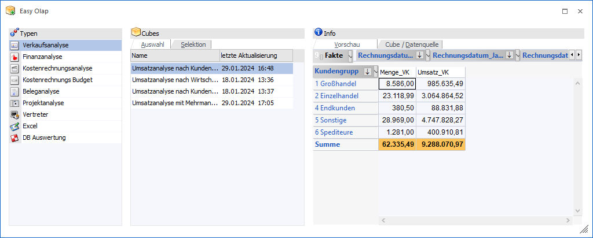
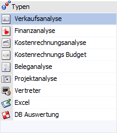
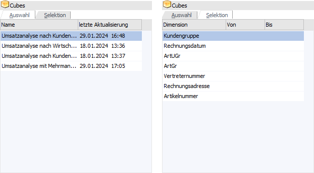
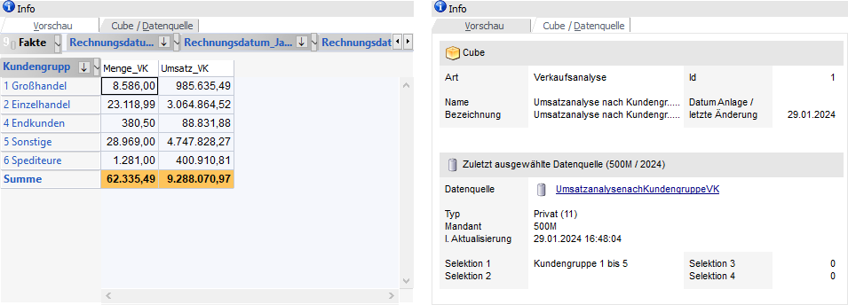
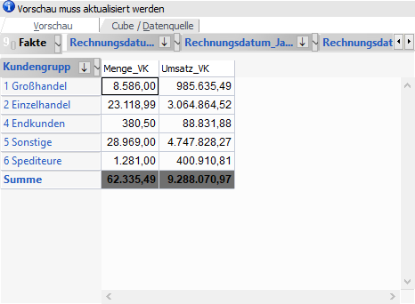
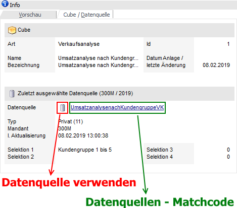
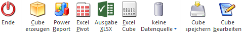

Im Programmbereich "Easy Olap", welcher über den Menüpunkt…
1 WinLine INFO
1 Business Intelligence
1 Easy Olap
… gestartet werden kann, können die im Cube Wizard definierten Cubes geöffnet, aktualisiert, gespeichert oder bearbeitet werden. Zusätzlich ist es über einen Selektionsbereich möglich den auszuwertenden Datenbereich direkt einzugrenzen.

Das Programmfenster "Easy Olap" ist in 3 Bereiche unterteilt:
ü Typen
ü Cubes
ü Info
Typen

Über den Bereich "Typen" erfolgt die Auswahl der Cube-Typen. Hierbei stehen folgende Auswahlmöglichkeiten zur Verfügung:
ü "Verkaufsanalyse" um Statistik-Werte aus WinLine FAKT zu erhalten
ü "Finanzanalyse" für Werte aus WinLine FIBU
ü "Kostenrechnungsanalyse" und "Kostenrechnungs Budget" für Werte aus WinLine KORE
ü "Beleganalyse" für die Auswertung von WinLine FAKT-Belegen
ü "Projektanalyse" für die Auswertung von Projekten
ü "Vertreter" für die Analyse von Vertreter-Provisionen und -Bemessungen
ü "Excel" für die Aufbereitung von Werten aus externen Excel Dateien
ü "DB Auswertungen" für die Verwendung von selbst kreierten SQL-Statements
Nach Anwahl eines Typs werden die zugehörigen Cubes im Bereich "Cubes" dargestellt.
Cubes

Der Bereich "Cubes" untergliedert sich in die Register "Auswahl" und "Selektion".
ü Register "Auswahl"
In der
Tabelle dieses Registers werden alle Cubes des ausgewählten Typs angezeigt. In
der Spalte "letzte Aktualisierung" wird automatisch die Information der
aktuellsten Cube-Datenquelle dargestellt (bezogen auf den aktuellen Benutzer /
Mandanten), d.h. um an dieser Stelle eine Information zu sehen, muss bei der
Ausgabe eine Datenquelle erstellt bzw. aktualisiert worden sein.
Hinweis
Nach Anwahl eines Cubes wird die Vorschau entsprechend aktualisiert. Sollte der Cube bisher noch nie (z.B. durch den Import einer Definition im "Cube Wizard") oder nur ohne Datenquelle erzeugt worden sein, dann wird die Vorschau ohne Inhalt dargestellt.
ü Register "Selektion"
In dieser
Tabelle werden sämtliche Dimensionen des ausgewählten Cubes zur Selektion
vorgeschlagen. Hierbei steht jeweils der entsprechende Matchcode der Dimension
zur Verfügung. Die Anwahl des Registers ist nicht möglich, wenn den Buttons
"Datenquelle" auf "Datenquelle verwenden" steht.
Hinweis
Nach der Selektion einer Dimension wird die Cube-Vorschau gräulich dargestellt und mit dem Vermerk "Vorschau muss aktualisiert werden" versehen.
Achtung
Bei Cubes des Typs "Excel" und "DB Auswertungen" steht das Register "Selektion" nicht zur Verfügung.
Info

Der Bereich "Info" untergliedert sich in die Register "Vorschau" und "Cube / Datenquelle", wobei das zuletzt verwendete Register benutzerspezifisch abgespeichert wird.
ü Register "Vorschau"
In dem
Register "Vorschau" wird der ausgewählte Cube auf Grundlage der zuletzt
vorgenommenen Aktualisierung mit Datenquelle dargestellt.
Hinweis
Nach der Selektion einer Dimension wird
die Cube-Vorschau gräulich dargestellt und mit dem Vermerk "Vorschau muss
aktualisiert werden" versehen. Die Aktualisierung erfolgt über die
Ausgabe-Buttons, wobei eine Datenquelle erzeugt bzw. aktualisiert werden
muss.

ü Register "Cube /
Datenquelle"
In diesem Register werden Informationen zu dem aktuellen Cube
und der zuletzt ausgewählten Datenquelle (bezogen auf Cube / Benutzer / Mandant
/ Wirtschaftsjahr) ausgewiesen.
Durch Anwahl des Icons  wird die zuletzt gewählte Datenquelle
automatisch geladen und in der weiteren Folge bei der Ausgabe (z.B. als Cube
oder Power Report) verwendet. Wird hingegen auf den Namen der Datenquelle
geklickt, so öffnet sich der Datenquellen - Matchcode.
wird die zuletzt gewählte Datenquelle
automatisch geladen und in der weiteren Folge bei der Ausgabe (z.B. als Cube
oder Power Report) verwendet. Wird hingegen auf den Namen der Datenquelle
geklickt, so öffnet sich der Datenquellen - Matchcode.
Beispiel

Buttons

Ø Ende
Durch Anwahl des Buttons "Ende" oder Taste ESC wird der Programmbereich geschlossen.
Ø Cube erzeugen
Wenn die Option "Cube erzeugen" gewählt wird, dann wird der Cube im "Olap Viewer" angezeigt, wo es dann die Möglichkeit gibt, die Daten nach verschiedenen Gesichtspunkten auszuwerten.
Ø Power Report
Durch Drücken des Buttons "Power Report" wird die Auswertung auf Basis von Cube-Daten grafisch dargestellt. Die Ausgabe ist individuell anpassbar und erfolgt in der Form von "Widgets", die unterschiedlichste Darstellungen ermöglichen.
Ø Excel Pivot
Durch Anwahl des Buttons "Excel Pivot" werden die Cube-Daten in Form einer Pivot Ausgabe in Microsoft Excel (2007 oder höher) angezeigt.
Ø Ausgabe XLSX
Mit Hilfe des Buttons "Ausgabe XLSX" werden die ausgewerteten Zeilen an Microsoft Excel übergeben.
Ø Excel Cube
Die ermittelten Werte werden als Excel Tabelle, in einem dem Cube angelehnten Aufbau, ausgegeben.
Ø Datenquelle
Mit Hilfe dieser Auswahl kann definiert werden, ob und wie eine Datenquelle (d.h. ein Snapshot, eine View oder eine MasterView) verwendet werden soll.
ü Keine Datenquelle
Bei Auswahl
von "keine Datenquelle" wird keine zuvor angelegte Datenquelle genutzt. D.h. die
Daten werden von der WinLine "live" ermittelt und in der gewünschten Form
ausgegeben.
Hinweis
Da die BI-Ausgabe (z.B. Cube oder Power Report) immer eine Datenquelle benötigt, wird im Hintergrund eine temporäre Datenquelle (Snapshot) gebildet.
ü Datenquelle
erstellen/aktualisieren (Snapshot)
Die Daten werden zur Laufzeit ermittelt
und an einen zu definierenden Snapshot übergeben. Nach dem Füllen der
Datenquelle wird die gewünschte Ausgabevariante über die Datenquelle erzeugt.
Dieser Vorgang kann mit einer Zeitverzögerung verbunden sein, da die Daten
zusätzlich gespeichert werden müssen.
ü Datenquelle
erstellen/aktualisieren (View)
Im Gegensatz zum Arbeiten mit einem Snapshot
wird eine View, d.h. eine Sicht auf die gewünschten Daten, erzeugt. Eine View
liefert somit immer aktuelle Daten, was mit einem Zeitaufwand verbunden ist.
Hinweis
Bei dem Aktualisieren einer View wird nur die Sicht aktualisiert, z.B. mit neuen Selektionskriterien versehen.
ü Datenquelle verwenden
Bei der
Verwendung eines Snapshots werden die Daten direkt aus der Datenquelle gelesen,
d.h. die für die Ausgabe benötigten Daten können ohne Verzögerung in der
gewünschten Variante ausgegeben werden.
Wird hingegen eine View gewählt, so
werden die Daten für die Ausgabe "live" ermittelt. Gleiches gilt für die
MasterView, wobei hier die Daten so aktuell sind wie die zugrunde liegenden
Datenquellen.
Hinweis
Der Button "Datenquelle verwenden" steht nur zur Verfügung, wenn für diesen Bereich (bezogen auf den aktuellen Benutzer / Mandanten) zumindest eine private oder öffentliche Datenquelle existiert.
Hinweis
Weitere Informationen zum Thema "Datenquellen" entnehmen Sie bitte dem Kapitel Die Datenquelle.
Ø Cube speichern
Der Cube wird als Offline-Cube (*.cube-Datei) mit sämtlichen Dimensionen, Measures und Werten abgespeichert. Die Daten stammen dabei aus der aktuellsten Datenquelle (bezogen auf den aktuellen Benutzer / Mandanten), außer es wurde per "Datenquelle verwenden" eine gewählt.
Hinweis
Mit dem Programm "CWLOlap.exe" können abgespeicherte Cubes außerhalb von WinLine aufgerufen und ausgewertet werden.
Ø Cube bearbeiten
Der Cube wird im Programm Cube Wizard geladen und kann dort bearbeitet werden.